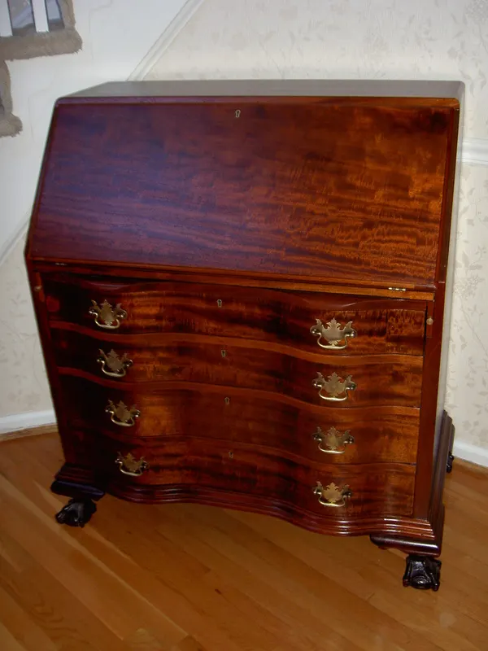

Guide No. 01 · Care & maintenance
Fine Furniture Care 101
The one to read first. Why most supermarket polishes do more harm than good, how to dust and handle a fine finish day to day, what to do the moment something spills — and what a white ring actually means before you reach for the sandpaper.
Read the guide →